Fuel System - Injection/Induction System Cleaning: Overview
SI B 13 01 07Fuel Systems
August 2010
Technical Service
This Service Information bulletin supersedes SI B13 01 07 dated August 2010.
[NEW] designates changes to this revision
SUBJECT
Fuel Injection and Induction System Cleaning
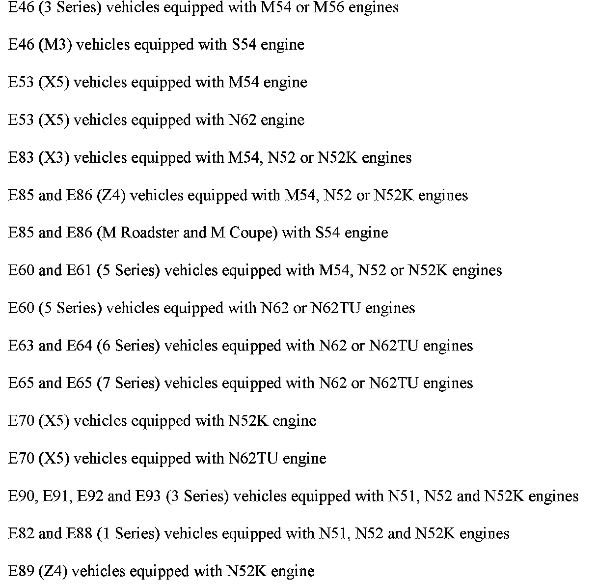
MODEL
SITUATION
Deposits found in the injection and induction system may cause the vehicle to experience a variety of drivability complaints, eventually leading to the Service Engine Soon lamp to be illuminated. Some of the possibilities are listed below.
Fuel Injectors
Deposits at the fuel injector's tip can impact fuel flow, disturbing the air/fuel mixture ratio.
Symptoms are the following: Hesitation or stumble during acceleration, or even loss of power; poor fuel efficiency; increased emissions of HC and CO; and "Service Engine Soon" lamp illumination due to misfire faults, or lean mixture adaptations.
Intake Valves
Deposits at the valves and on the intake manifold ports can absorb fuel during the warm-up phase, leaning out the air/fuel mixture ratio. Carbon buildup may disturb the mixture flow at low throttle conditions and/or idle speeds.
Symptoms are the following: Poor drivability; loss of power; unstable and/or rough idle; increased emissions of HC, CO and NOx; and "Service Engine Soon" lamp illumination due to intermittent misfire faults.
Combustion Chamber
Combustion Chamber Deposit Interference (CCDI) occurs when there is contact between carbon deposits on the piston crown and the cylinder head. The noise can be confused or misdiagnosed as a ping, knock, or other noises that could indicate a mechanical failure. CCDI occurs first as a cold start noise that can fade as the engine warms to operating temperature. The noise will reoccur at the next cold start. As deposits build, there is an increase in compression temperature that may cause pre-ignition detonations.
Symptoms are the following: Knocking; pinging; run-on; poor acceleration; octane requirement increase; increased emissions of NOx; and engine idle speed surges.
Depending on the manufacturer, fuels may contain various additives such as: oxidation and corrosion inhibitors; metal deactivators; emulsifiers; and anti-icing agents and dyes. In addition, they are required to include some form of an intake system deposit control package. Unfortunately, not all fuels are created equal, and some additive packages are not effective enough to maintain the integrity of the intake systems in high performance engines, or engines operating under severe environmental conditions. Even worse, the intake system deposit control additives in some fuels may actually contribute to the combustion chamber deposits accumulation, and to the problems associated with those deposits, i.e., knock, run-on and increased emissions of oxides of nitrogen.
To remedy these complaints, the BMW Group has developed a new special tool and cleaner concentrate to clean the fuel injectors, induction system and combustion chamber of harmful deposits.
Note:
The fluids and tools described in this Service Information bulletin are the only BMW approved items that can used to clean the fuel injection system, induction system and combustion chamber. Using non-approved fluids or tools can lead to premature component failure and will not be covered under Warranty.
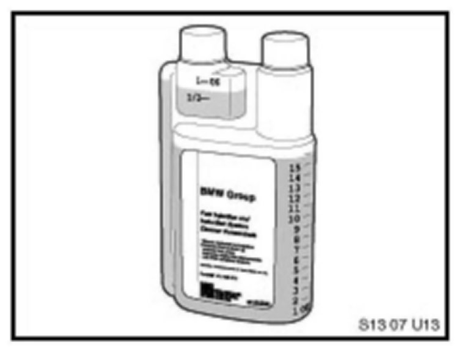
Fuel Injector and Induction System Cleaner Concentrate
P/N 82 14 0 428 376
1 bottle, 16 fl. oz.
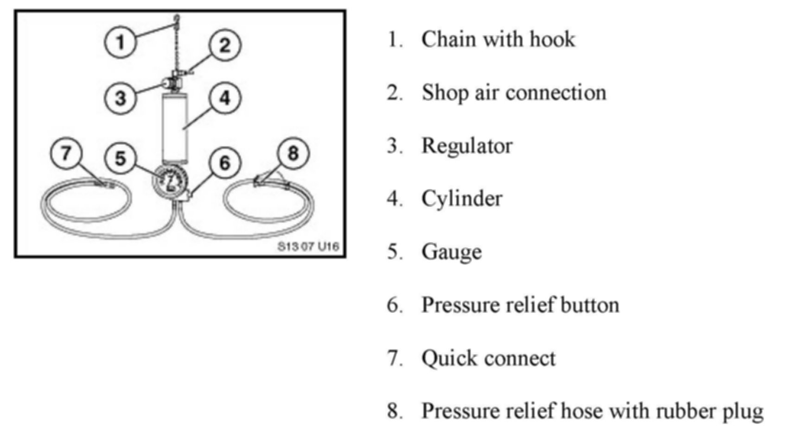
Fuel Injector and Induction System Cleaner Applicator
Kit P/N 82 14 0 429 692
This item will be shipped via the automatic Tool Shipment Program. Refer to SI B04 07 07 for complete details.
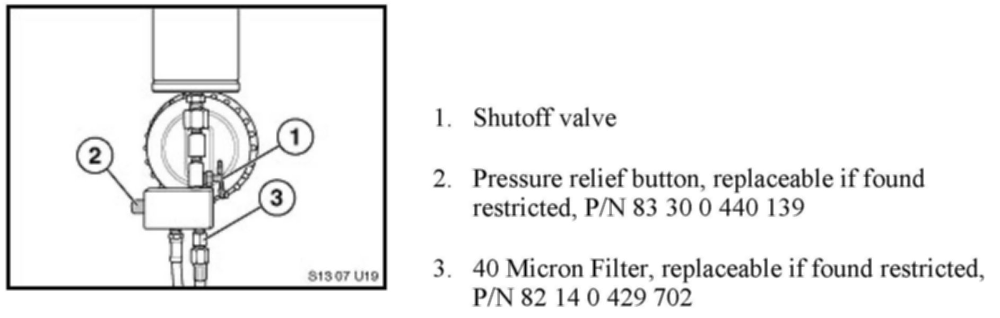
Pressure Relief Button, Shutoff Valve and 40 Micron filter location
Kit Overview:
M56 SULEV only
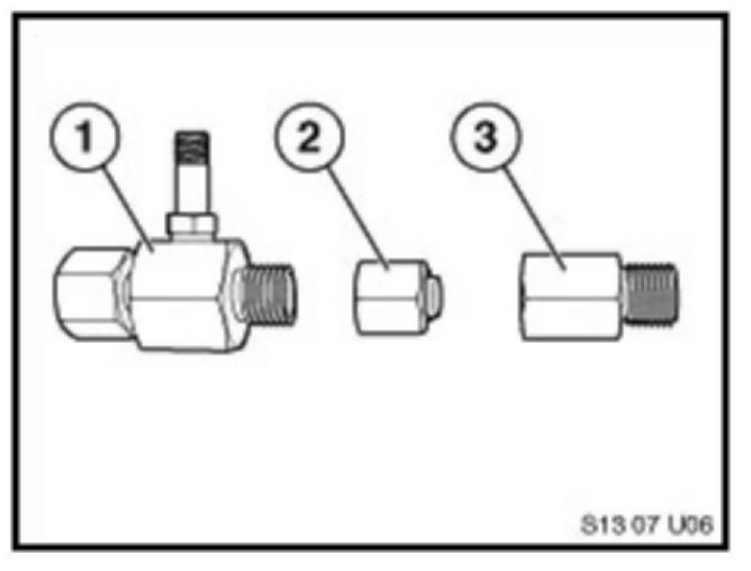
1. Pressure Adaptor P/N 81 11 0 394 963 not included in kit. Refer to SI B16 05 04.
2. High Pressure Threaded Female Cap, P/N 82 14 0 429 693
3. High Pressure Threaded Male Plug, P/N 82 14 0 429 696
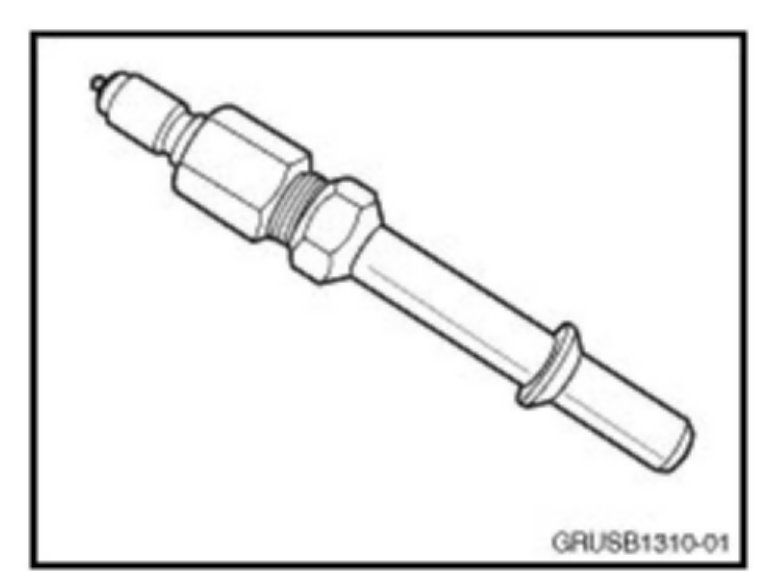
[NEW] Male Quick Disconnect Adaptor
P/N 83 302 158 083
[NEW]Note:
Sent to all centers via Automatic Tool shipment in August 2010. Not included with the original kit, the adaptor must be ordered separately if additional kits are ordered. Refer to SI B04 06 10 for more information.
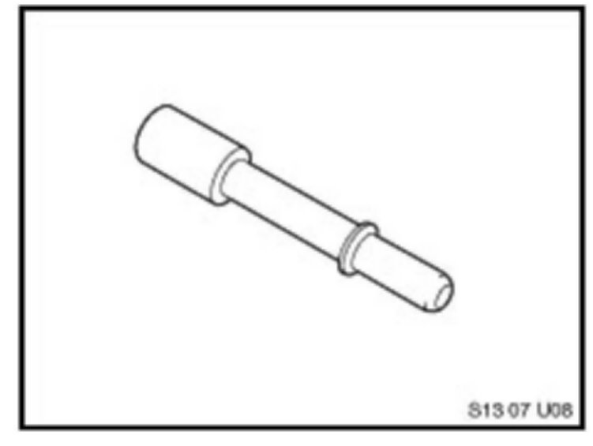
Quick Disconnect Male Plug
P/N 82 14 0 429 694
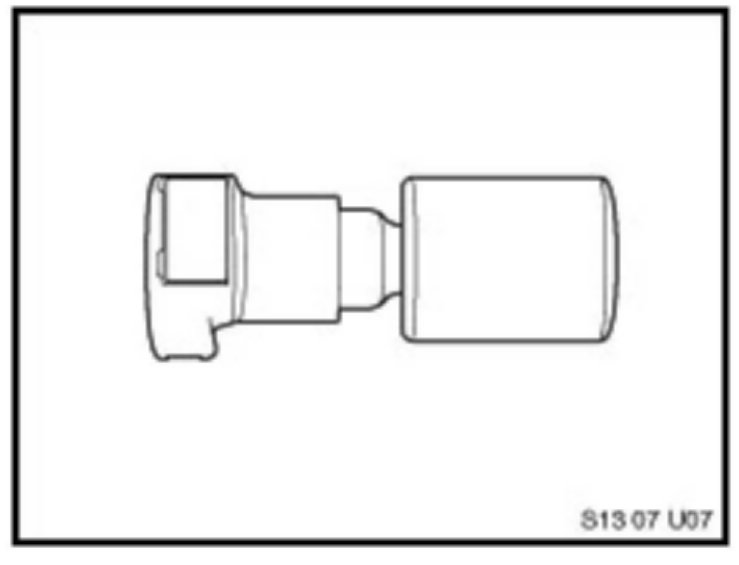
Quick Disconnect Female Cap
P/N 82 14 0 429 695
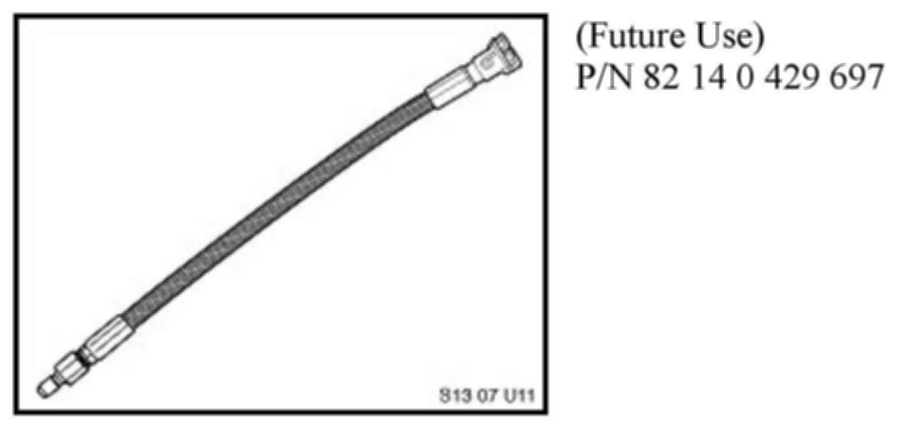
Braided Line/Female Quick Disconnect
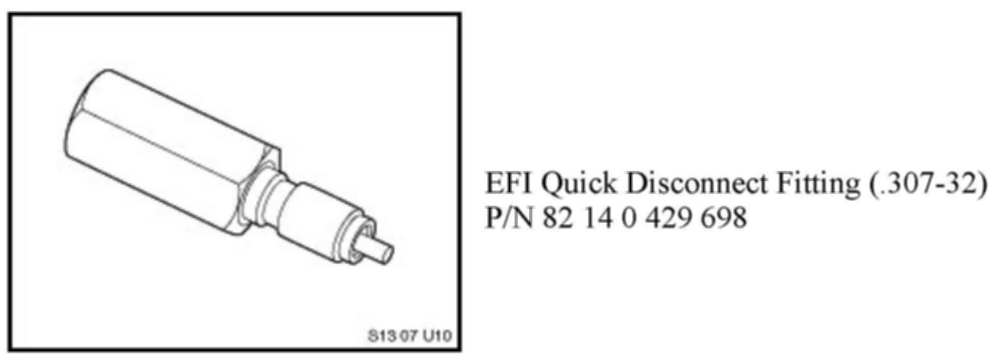
EFI Quick Disconnect Fitting (.307-32)
P/N 82 14 0 429 698
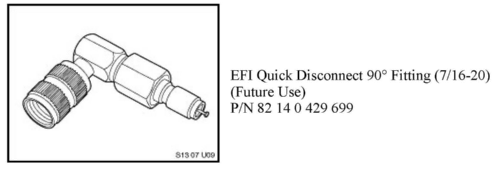
EFI Quick Disconnect 90° Fitting (7/16-20)
(Future Use)
P/N 82 14 0 429 699
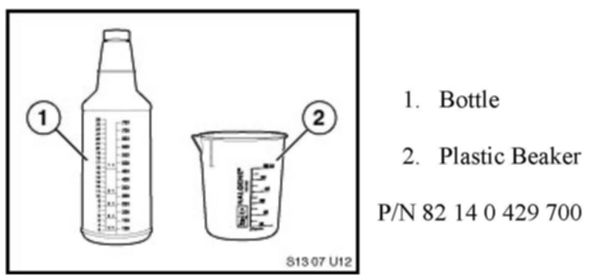
1. Bottle
2. Plastic Beaker
P/N 82 14 0 429 700
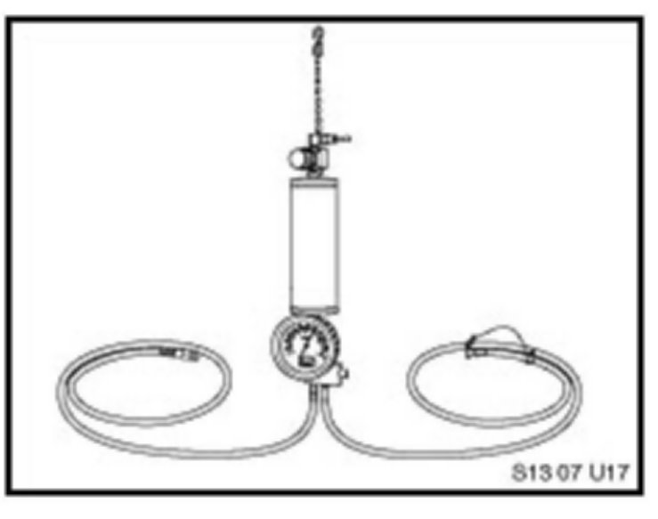
Applicator (replacement part only)
P/N 82 14 0 429 701
The applicator lid replacement 0-ring can be ordered by calling the BMW Equipment Program.
The steel braided application hose can be ordered separately using PN 82 14 2 155 163.
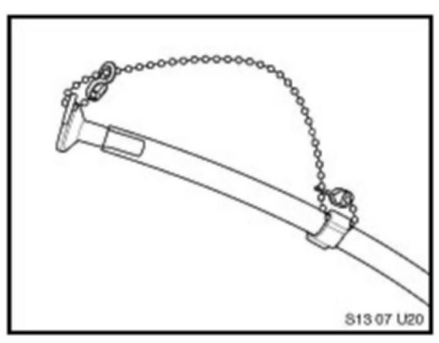
Clear Drain Hose Assembly (with chain and rubber plug, replacement part only) P/N 82 14 0 429 703
Refer to the procedures described below by model. It is recommended that two applications be made consecutively on each vehicle. If more applications are required, please contact your Regional Technical Engineer via PuMA.
Procedure A - All vehicles equipped with the M54, N51, N52, and N52K engines
Procedure B - All vehicles equipped with the M56 (SULEV) engine
Procedure C - All vehicles equipped with the N62, N62TU, and S85 engines
Procedure D - All vehicles equipped with the S54 engine
Procedure E - E89 Z4 vehicles equipped with N52K engines
IMPORTANT:
Before starting the cleaning procedure, place the vehicle in a well-ventilated area. If the cleaning procedure occurs indoors, be sure to have the vehicle connected to an exhaust removal system. It is necessary to wear Nitrile rubber gloves and safety glasses during this procedure.
The shop air supply should be dried using a general purpose filtering system; the tool is not recommended for use with a lubricating system.
FINAL PROCEDURE FOR RELEASING THE VEHICLE TO THE CUSTOMER
Advise the customer that it is necessary to add one bottle of BMW Group Fuel System Cleaner Plus, P/N 82 14 0 413 341, with either TOP TIER Detergent Gasoline or Premium Fuel with a minimum octane rating of AKI 91, the next time that the vehicle is refueled.
For optimum cleaning, advise the customer to add one bottle every 3,000 miles when refueling. Refer to SI B13 05 06, BMW Fuel System Cleaner Plus.
More information regarding fuel systems and fuel additives can be found in the following Service Information bulletins:
^ SI B13 01 06 Alcohol Fuel Blends in BMW Vehicles
^ SI B13 02 06 TOP TIER Detergent Gasoline in BMW Vehicles
^ SI B13 04 06 Alcohol Detection Procedure
^ SI B13 07 06 Gasoline Quality & Detergent Additives - Customer Information Brochure
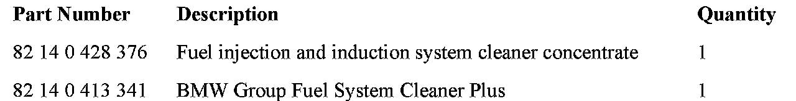
PARTS INFORMATION
WARRANTY INFORMATION
Because carbon deposit build up is related to fuel quality, it cannot be considered a defect in a vehicle's materials or workmanship. Consequently, performing the BMW Group Fuel Injection & Induction System Cleaning Procedure is not covered under the terms of the BMW New Vehicle Limited Warranty, maintenance plan or the Certified Pre-Owned Program.
Listed below are the approximate time allowances for performing the cleaning service (two applications) on various model and engine types:
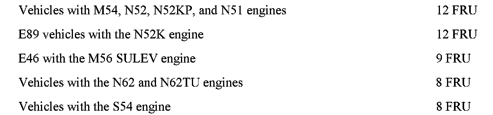
TOOL WARRANTY INFORMATION
The use of non-approved materials voids the warranty of the Fuel Injector and Induction System Cleaner Applicator Kit, P/N 82 14 0 429 692, and its contents. All of these tools are returned for inspection. If materials causing damage to these tools have been identified, then the tool will be returned to your center and a replacement credit will not be applied. When the tools described above are returned for warranty reimbursement, the tool must be accompanied by contact information and a reason for return in the shipping carton. Using a non-approved material can lead to deterioration of the tool, resulting in incorrect operation and a possible safety concern.
The Fuel Injector and Induction System Cleaner Applicator is constructed with materials that are compatible with gasoline and the Fuel Injector and Induction System Cleaner Concentrate, P/N 82 14 0 428 376, only.
Refer to Parts Information bulletin PIBO6 03 02 for tool warranty details.